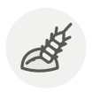

Rye flour
Farine de seigle
| Latin name | Secale cereale |
|---|---|
| Family | Grains & flours |
| Origin | Anatolia & Central Europe |
| Season (France) | All year |
| Flavour | Earthy · Sour · Bitter · Toasty |
| Typical price (France) | 2–5 €/kg |
What it is
Rye tolerates cold and poor soil that would kill wheat, which is why northern and eastern Europe built their bread on it. Damp rye can carry ergot, a fungus whose effects are blamed for medieval outbreaks of mass hallucination.
In the kitchen
Its gluten is weak and its pentosans make dough sticky. Wet your hands rather than adding flour, or you will make a brick.
Goes with
Caraway Honey Butter Salmon T65 bread flour Walnut Salted butter Juniper berry
Same species
Also used with
Barley malt syrup Buckwheat honey Activated charcoal Vital wheat gluten Diastatic malt powder Leaf lard
Something wrong here, or missing? Tell us